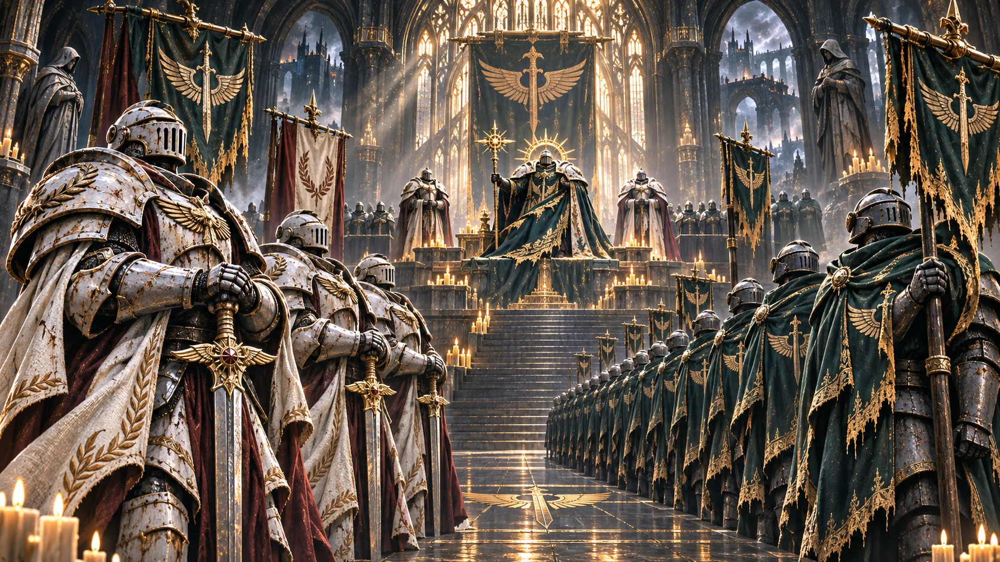
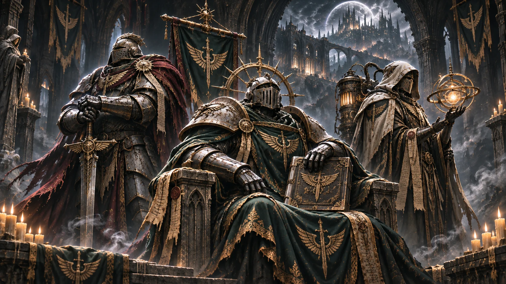
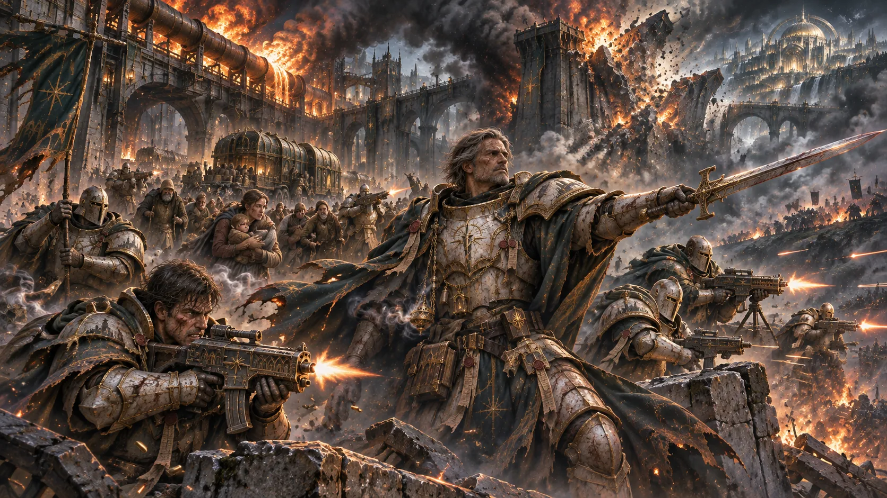
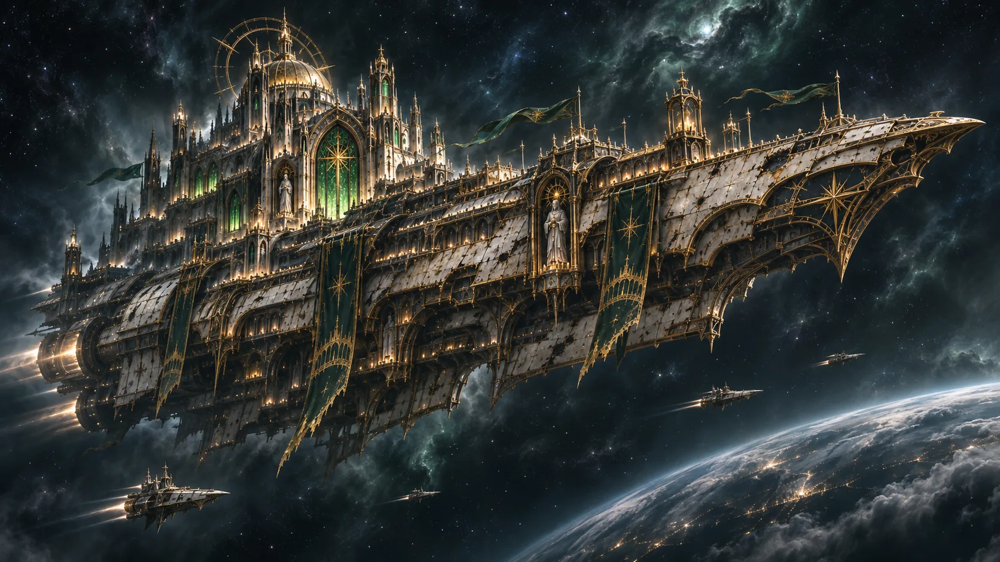

战团构成ORGANIZATION

人物志PERSONAE

战役档案CAMPAIGNS

武装与遗物ARMAMENTS

基地与舰船BASES & FLEET
◇ 典型事迹 NOTABLE DEEDS
四种行动与代价 · 点击进入对应原文记录


PERSONAE · VOLUME IX
知名人物
九名人物均按 V3.7 原稿建立独立档案入口，姓名、身份和事迹回链至第九卷。9 幅专属场景原画各自独立生成；点击图片查看高清原画，点击人物姓名进入 V3.7 原文。
阅读第九卷原文 →人物档案 · 九名记录对象
点击直达对应原文小节；9 张独立原画 · 点击图片查看高清图

地理图未确认 黑河—旧渠—金穹—深渊之井的相对关系仍需根据 V3.7 整理，现阶段不以猜测性剖面图替代设定。